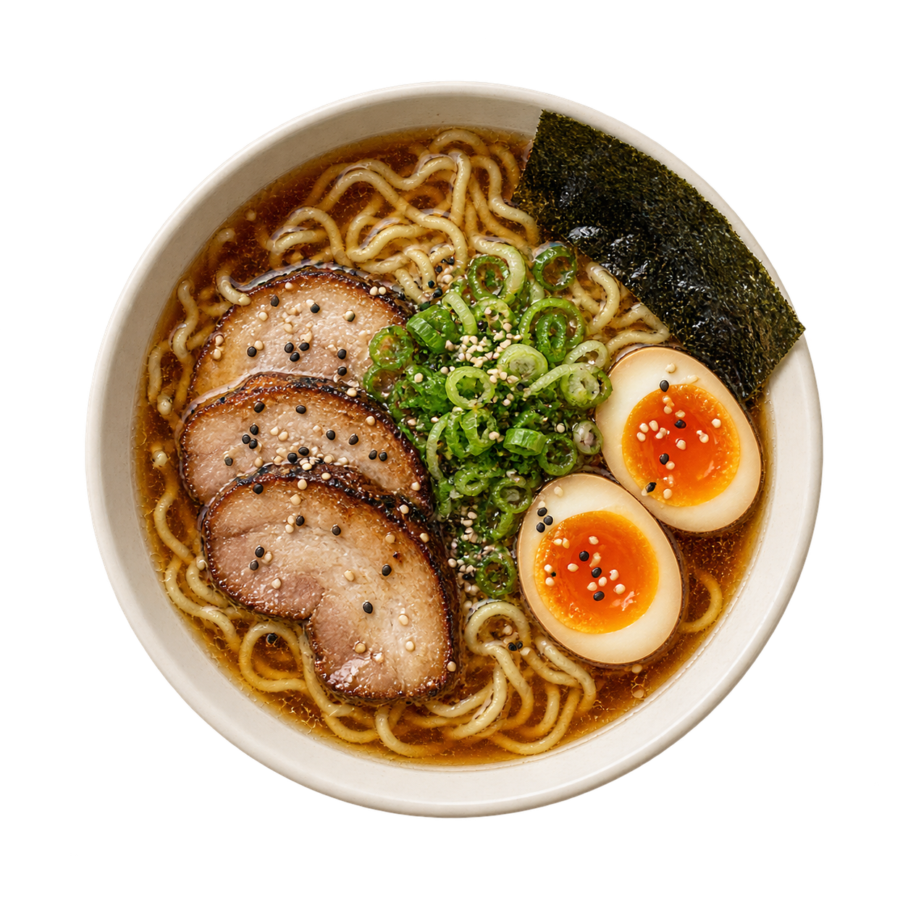
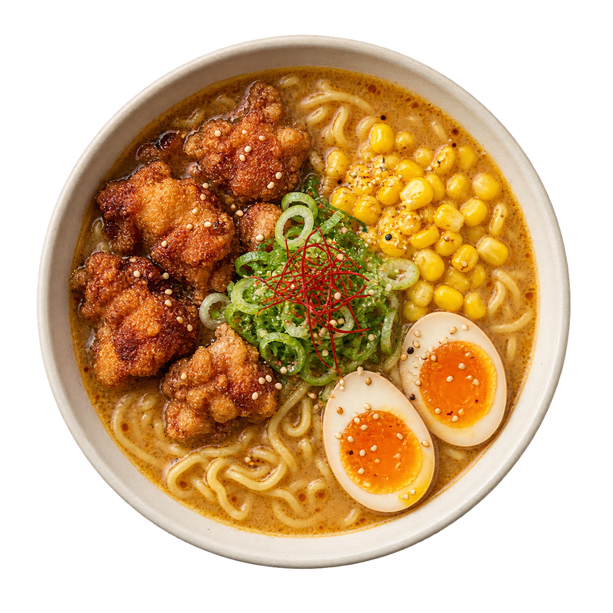
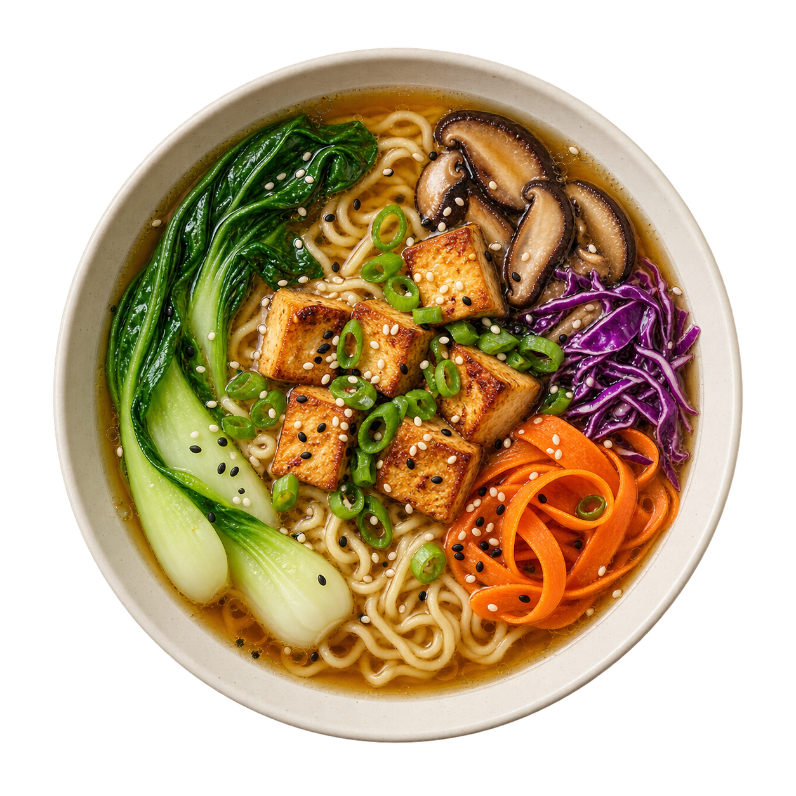

FEITO COM TEMPO. SERVIDO COM ALMA.
Um bom ramen.
O seu momento.
Caldo intenso, noodles no ponto e combinações que abraçam. Encontre o seu favorito — ou crie um só seu.
Monte seu bowl


O CLÁSSICO DA CASA
Shoyu & char siu
Caldo de shoyu, porco braseado, ovo marinado e um toque de cebolinha.
Profundo · delicado · reconfortanteRole para descobrir os sabores
O QUE FAZ UM BOWL ESPECIAL
O segredo está
no cuidado.
Um caldo que ganha profundidade. Noodles que encontram a textura certa. Cada ingrediente tem seu lugar, e cada bowl conta uma história diferente.
Caldo encorpadoNoodles delicadosSeu toque final
SUA COMBINAÇÃO FAVORITA
Agora, do seu jeito.
Escolha a base, a proteína e os complementos. O resto é vontade de provar.